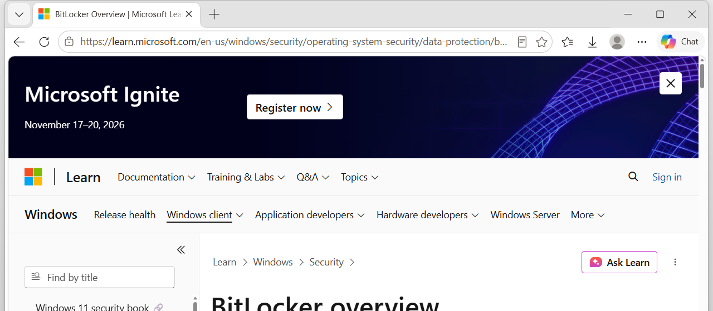

متى نعملها
نعمله عندما يتبادل المتصفح البيانات مع خادم الموقع، ونريد تشفير هذا التبادل.
تقنية 8 من 15
نعمله عندما يتبادل المتصفح البيانات مع خادم الموقع، ونريد تشفير هذا التبادل.
وظيفته دمج بروتوكول نقل النص التشعبي (Hypertext Transfer Protocol - HTTP) مع طبقة المنافذ الآمنة (Secure Sockets Layer - SSL) أو أمان طبقة النقل (Transport Layer Security - TLS).
النتيجة بروتوكول نقل النص التشعبي الآمن (Hypertext Transfer Protocol Secure - HTTPS). يمنع التنصت وهجوم الرجل في المنتصف (Man-in-the-Middle).
بعد تركيب الشهادة على الخادم نفعّل بروتوكول نقل النص التشعبي الآمن (Hypertext Transfer Protocol Secure - HTTPS)، فيبدأ عنوان الموقع به.
